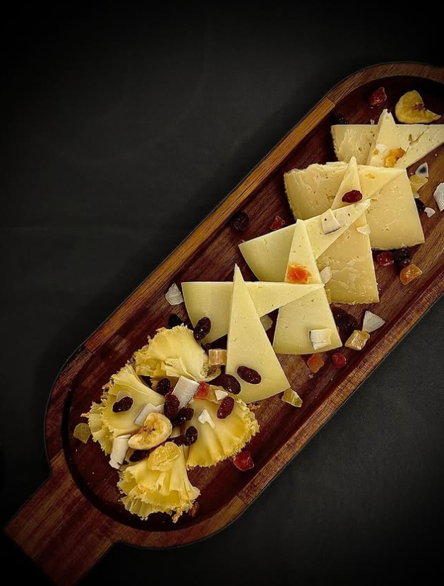
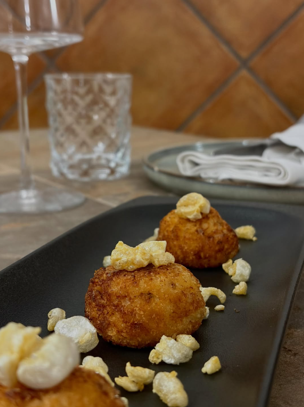
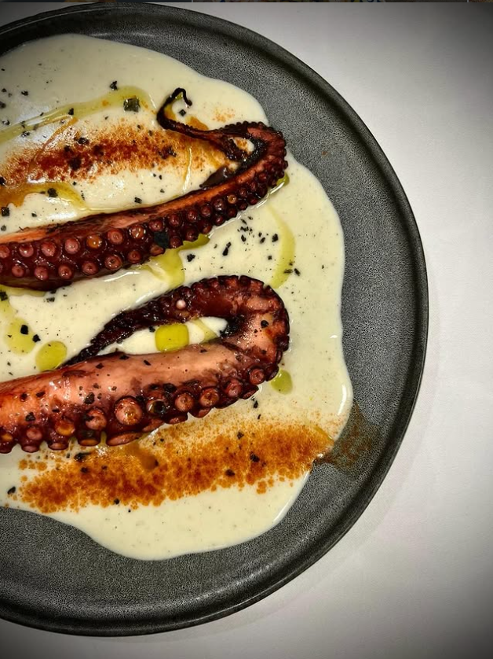

Almansa · desde 1973
El Restaurante
Medio siglo de cocina de la tierra en el corazón de Almansa.
Medio siglo de cocina de la tierra en el corazón de Almansa.
Llevamos más de cincuenta años cocinando en Almansa lo que mejor sabemos hacer: comida casera, de raíz, con el producto de la tierra como protagonista. Lo que empezó como una casa de comidas es hoy un restaurante que mira al presente sin renunciar a su origen.
Creemos que la cocina es un arte que honra el pasado y abraza el futuro: respetamos la receta, pero la servimos con la elegancia y el cuidado de hoy.

Trabajamos con productores y mercado: quesos curados de la zona, carnes maduradas, pescado fresco, verdura de temporada y nuestros arroces. Cocinamos para realzar, no para esconder. Esa es toda nuestra técnica.

Disponemos de dos comedores: uno para el día a día y otro reservado para celebraciones, comidas de empresa y grupos. Un ambiente tranquilo, cuidado, pensado para disfrutar de la mesa sin reloj.
Reservar para un grupo“Cocinamos como se cocinaba en casa, pero con el respeto de quien sabe que cada plato cuenta.”
Los Cuchillos · Almansa